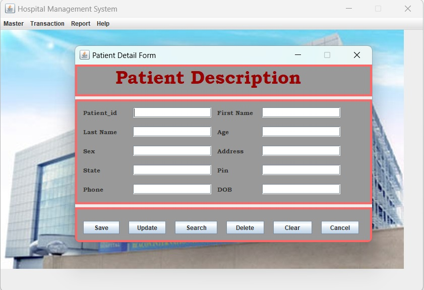

Software Testing Enthusiast | BCA Graduate | 1+ Year Experience
Hi, I am Anurag Ranjan, a BCA graduate from CIMAGE (2018-2021) with 1 year of experience in US staffing as a Technical Recruiter. I have completed a 4-month Software Testing course covering Manual Testing and Selenium with Java. Passionate about ensuring software quality and seeking opportunities in Software Testing.

Developed a desktop application using Java (Swing) and MySQL to manage patient records. Conducted manual testing to ensure error-free functionality of patient registration, record management, and reporting modules.
Duration: Mar 2021 - Jun 2021
Tested a dummy website (the-internet.herokuapp.com) by creating test cases for login and form submission. Reported bugs with screenshots and documented results on GitHub.
Link: GitHub Repo
Feb 2023 - Aug 2023 | Noida, UP
Recruited candidates for US clients, shortlisted CVs, negotiated rates, and scheduled interviews using ATS software (Ceipal).
Aug 2022 - Feb 2023 | Noida, UP
Sourced candidates from portals like Dice, Monster, LinkedIn, and conducted rate negotiations.
Email: anuragranjan20022001@gmail.com
LinkedIn: linkedin.com/in/anurag-ranjan
GitHub: github.com/anuragcoderzz
Thanks